<!-- ============================================== -->
<!-- JOURNAL ENTRY TEMPLATE                        -->
<!-- copy this block into journal.html             -->
<!-- paste inside <div class="journal-entries">    -->
<!-- new entries go at the TOP (reverse chrono)     -->
<!-- ============================================== -->

<article class="journal-scrap" id="entry-YYYY-MM-DD">
  

  <!-- optional decorations-- uncomment as needed -->
  <!--  -->
  <!--  -->
  <!--  -->
  <!--  -->

  <div class="scrap-content">
    <div class="entry-date">Month DD, YYYY</div>
    <h2 class="entry-title">title here</h2>

    <p class="entry-excerpt">
      entry text goes here. can use multiple p tags for paragraphs.
    </p>

    <!-- can add inline image if relevant -->
    <!--  -->

    <!-- polaroid style -->
    <!-- 
    <div class="entry-polaroid">
      
    </div>
    -->

    <!-- remove this if not doing separate post pages -->
    <a href="journal/post-slug.html" class="read-more">Read more →</a>
  </div>
</article>

<!-- ============================================== -->
<!-- CUSTOM STYLING PER ENTRY                      -->
<!-- ============================================== -->

if i want to override the auto-rotation or swap paper texture for a specific
entry, add to style.css using the entry id: #entry-2026-01-25 {
background-image: url('assets/images/graph-paper.jpg'); transform: rotate(3deg);
} #entry-2026-01-25 .scrap-tape { left: 20%; transform: rotate(-10deg); } can
reposition any of the decoration elements this way too

<!-- ============================================== -->
<!-- DECORATION CLASSES REFERENCE                  -->
<!-- ============================================== -->

.scrap-tape tape piece, auto-alternates position per entry .scrap-clip
paperclip, defaults top right .scrap-stamp stamp img, defaults bottom right
.scrap-flower dried flower, defaults top left, has a -15deg rotation
.scrap-washi second tape piece, defaults bottom left .entry-image inline img
with subtle rotation + shadow .entry-polaroid wrap around img for white polaroid
border

<!-- ============================================== -->
<!-- PAPER TEXTURES                                -->
<!-- ============================================== -->

rotations auto-alternate via nth-child in css can also make paper textures
alternate - theres a commented out block in style.css for this, just need to
uncomment and make sure texture files are included accoridngly: -
assets/images/line-paper.jpeg (already have) - assets/images/graph-paper.jpg -
assets/images/aged-paper.jpg - assets/images/kraft-paper.jpg or can override
per-entry with the id selector if i dont want it automatic
